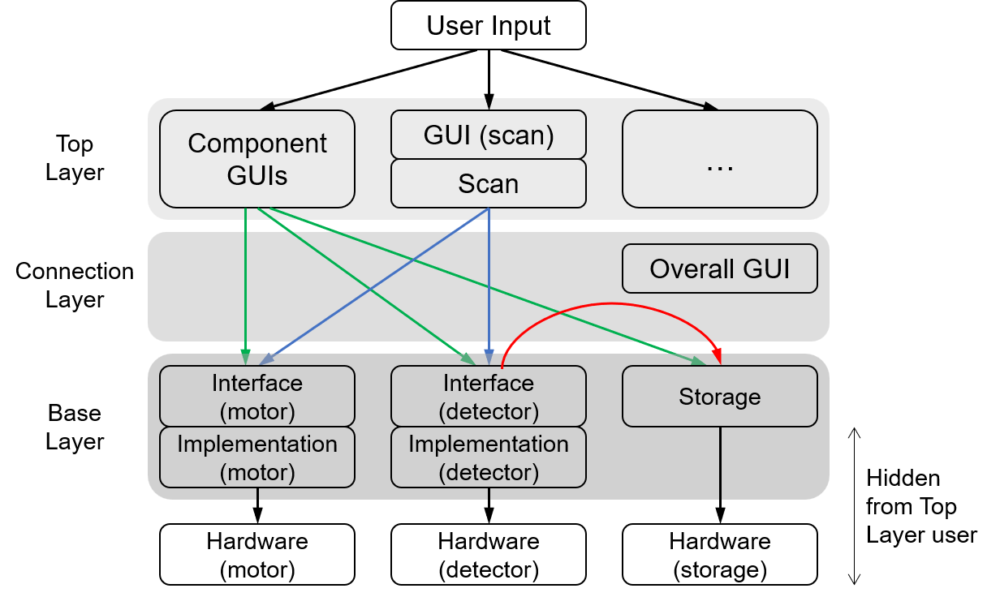

Getting Started
lys_instr is built around a three-layer architecture that separates device communication, measurement workflow, and GUI assembly.
This separation is the central design principle of the package: hardware-specific code stays in small device classes, while parameter scans, data handling, and GUI components remain reusable across different instruments and experimental setups.

Base Layer: Device Controller Abstraction
Most measurement systems contain controllers, which change parameters such as field, temperature, or position, and detectors, which acquire data such as images, spectra, or time traces.
lys_instr provides standard interfaces for these roles. Users implement device-specific subclasses only for hardware-dependent operations, such as connecting to instruments, sending commands, and reading values or acquired data. The shared interfaces handle state monitoring, busy/alive checks, Qt signals, and threaded operation, so higher layers can control different instruments through the same methods.
Top Layer: Workflow Coordination
The Top Layer implements reusable measurement logic on top of the Base Layer interfaces. A typical experiment repeatedly changes one or more parameters and records data after each change; in lys_instr, this pattern is represented as a scan.
Because scans call only the standard controller and detector methods, the same scan logic can be reused across many hardware configurations. A scan can sweep motor axes, iterate switch states, trigger detector acquisition, and combine these steps as nested workflows. The package also provides GUI components for motors, switches, detectors, storage, and scans, all built on the same abstract interfaces.
This event-driven design keeps the GUI responsive during asynchronous instrument operations. Device states, acquired data, and saving status are updated through Qt signals rather than blocking GUI actions.
Connection Layer: Control-System Assembly
The Connection Layer brings controllers, detectors, storage, scan logic, and GUI widgets into a complete measurement system. It manages the links between components so that data and state changes flow automatically between them.
In this layer, users assemble applications from existing components rather than writing low-level coordination code. For example, a detector can be connected to storage for automatic saving, and the corresponding GUI widgets can be placed into a single lys subwindow. Prebuilt templates are provided for common experimental layouts, while custom assemblies can be created from the same building blocks.
Overall, lys_instr is especially useful for multi-parameter experiments where the same control-and-detect pattern appears across different devices and laboratories.
The tutorial follows this architecture in practice. After launching lys_instr, the hands-on example shows a complete assembled measurement GUI.
The Basics section continues with adding Base-Layer interfaces, such as motors and detectors, and provides templates for assembling common systems quickly.
The Advanced sections move into the Top and Connection Layers, covering reusable GUI components for motors, switches, detectors, and storage, followed by scan coordination and axis-dependency tools for coupled control.